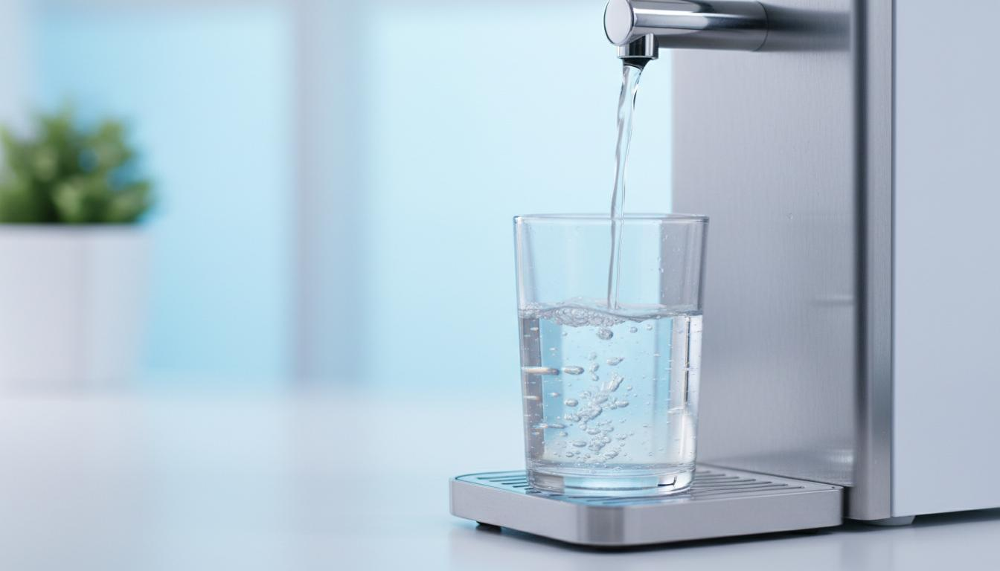
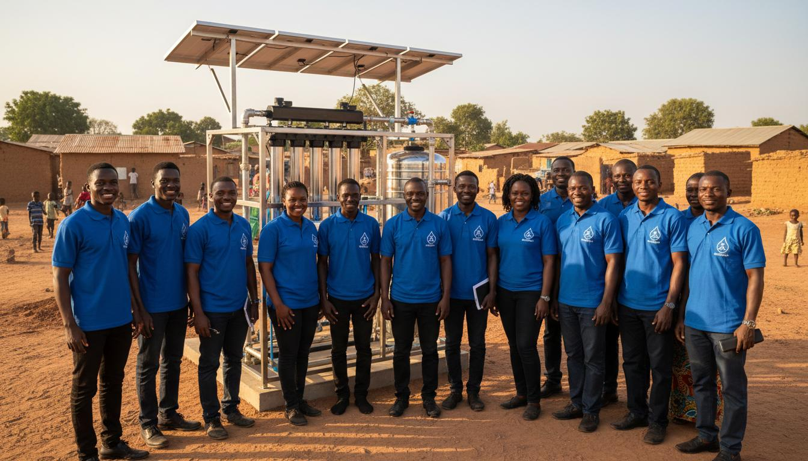

TS
Thabo Sithole
Founder & Executive Director
A non-profit organisation committed to ensuring every South African has access to clean, safe drinking water.

Water For All was founded in 2019 by a group of environmental engineers and community activists who witnessed first-hand the devastating effects of water scarcity in rural South African communities. What began as a small pilot project in the Eastern Cape has grown into a nationwide initiative.
Over the past six years, we have installed over 320 water purification stations, trained more than 500 community water stewards, and brought clean water access to over 75,000 people who previously relied on unsafe water sources.
Our approach combines cutting-edge water purification technology with deep community engagement, ensuring that every installation is maintained and cherished by the people it serves.
To provide sustainable access to clean, safe drinking water for underserved communities across South Africa through innovative technology, education, and community-driven partnerships that create lasting change.
A South Africa where every person, regardless of geography or economic status, has reliable access to clean drinking water by 2035 — creating healthier communities, stronger local economies, and a more equitable society.
Dedicated professionals working tirelessly to bring clean water to every community.

Founder & Executive Director
Head of Operations
Chief Technology Officer
Community Outreach Manager
Head of Education Programmes
Fundraising & Partnerships Director
Volunteer Coordinator
Water Quality Specialist
We are always looking for passionate individuals and organisations to partner with us.
Get Involved